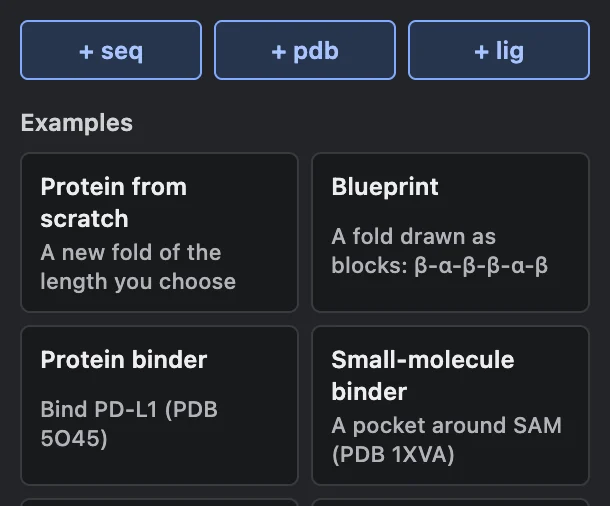
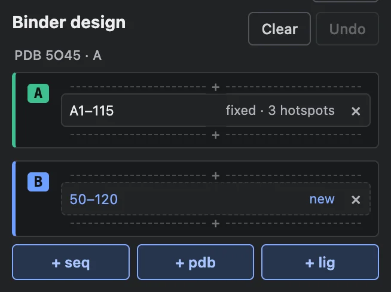
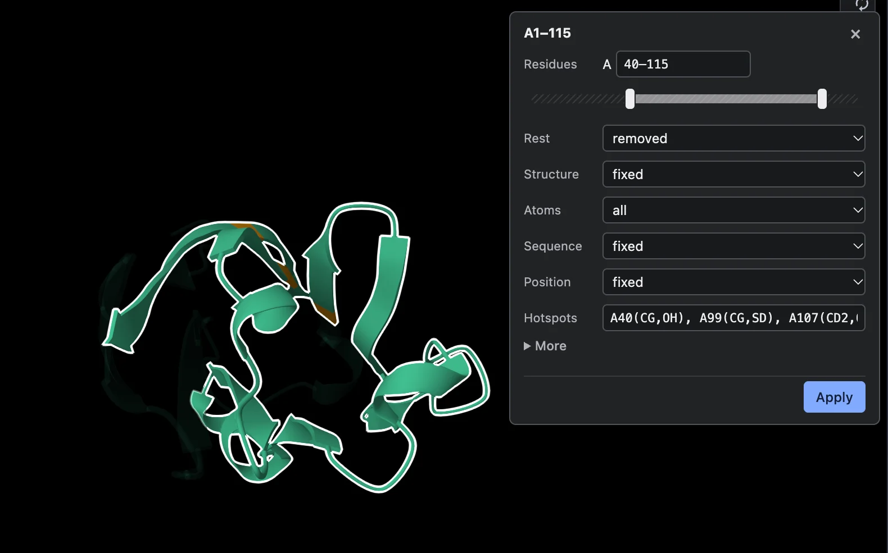
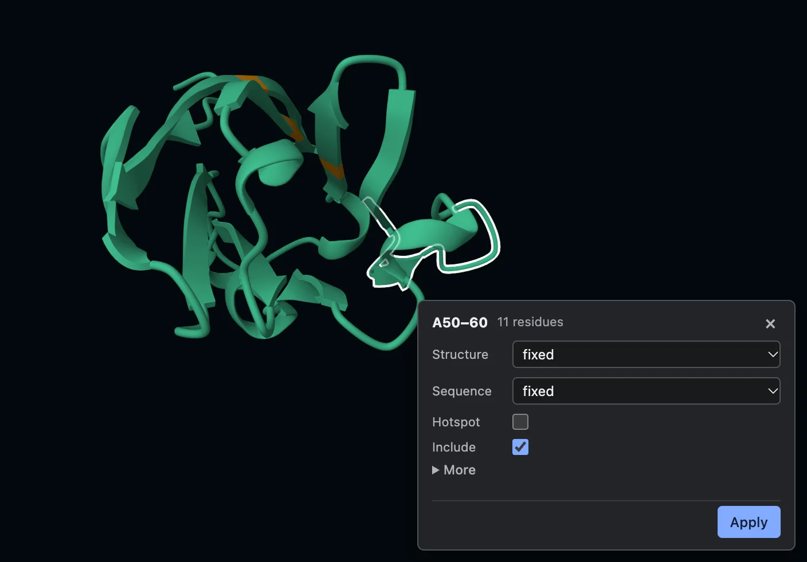
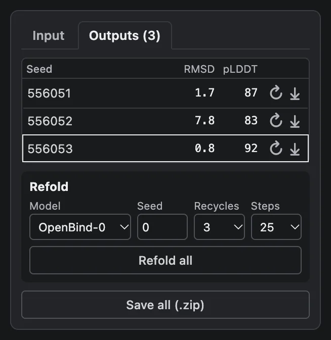

RFD4-Proteina in the browser
Set up a design, run it on your own GPU, and compare the results. Nothing is uploaded: the model runs in Chrome through WebGPU.
Start
A job is built from parts. Start with one, then add more the same way:
- + seq: a new chain for the model to design, 60–100 residues to start.
- + pdb: chains from a PDB entry (
5O45, or1J79 A Cfor some chains, with the ligands filed under them;9FJX B LVYnames a ligand by its code) or a file, kept as they are. - + lig: a small molecule by its PDB code (
HEM,ATP,ZN), placed by the model.

Or open one of the examples: each is fetched from its PDB entry and set up for you. Clear empties the job; Back brings it back.
The design card
The card lists each chain as pieces, in order: what is kept, what is free, and where new residues go.
- A piece reads like
A17–131 · fixed · 3 hotspots,H99–109 · freeor50–120 · new. - Click a piece to change it. Its residues are selected in the viewer while its popup is open, and brought to the middle of the view.
- + between pieces inserts new residues there; × removes a piece.
- Chains are grouped under the structure they came from (
PDB 5O45 · A). Replace beside it puts your own entry or file in its place (an example's structure, say); × takes it out. - Undo steps back through every edit.

Every setting is fixed (kept as given) or free (the model decides).
Pieces
Residues
One range or several, like 1–40, 60–115. Under it, a bar shows the chain as it was loaded: drag either end
in to crop the piece, or out to bring residues back (up to the next piece). The structure previews it as you drag:
residues about to be cut nearly vanish.

- Rest: what happens to residues outside the ranges: removed (the default), free, or unchanged.
- Between: with several ranges, a length for the gaps, which become new residues (for a variable linker).
Structure, Sequence, Position
| Setting | Options |
|---|---|
| Structure | fixed: kept where it is. rigid: kept as it is, but the model places it (a framework
docking onto a target). free: the model builds it. With fixed or rigid, Atoms says which: all, backbone,
side chains, or named (CG, OD1). |
| Sequence | fixed: these amino acids. free: the model writes them. |
| Position | fixed: at this place in the chain. free: anywhere in the chain (a catalytic residue the model places). |
| Length | With structure and sequence both free: how many residues. Another count than now makes them new residues, each design picking one length from the range. |
| Hotspots | Residues of this chain a binder should touch: A56, A60-62, or some atoms: A56(CG,OH). |
Chains from the same structure that are rigid move as one body, so an antibody's heavy and light chains keep their pairing.
Designing a binder: crop the target to the domain around the site (the crop bar), give it two or three hotspots, and add the binder with + seq. The target can stay fixed, or be made rigid with Atoms backbone, as the model's own binder recipe does (its shape kept, placed by the model with the binder). There is no need to centre it.
More
- Shape: helix, strand or loop. Exposure: buried, intermediate or exposed.
- Interaction: what the side chains should do: H-bond donor or acceptor, salt bridge, π-stacking, π-cation, hydrophobic, metal-coordinating.
- Keep only: type residues (
A38, A14, A99) to keep just those, in that order; the rest of the chain is rebuilt around them (motif scaffolding).
New residues
A 50–120 · new piece has a Length range, a Shape, an Exposure and the chain's Fold. New residues that replaced
residues show was 7: click it, or set Structure or Sequence to fixed, to bring the originals back
with their coordinates.
Picking residues
Click residues in the viewer or the sequence bar for a shorter popup: Structure, Sequence, Length for one free stretch, Hotspot, and Include (untick to take them out of the job). The rest is under More. Use it to free or fix a region straight from the structure.

Popups move by their title bar, and later ones open where you left the last.
Chains
Click a chain's letter for its name, its place in the job, and a Fold for it to take (CATH: helix bundle, β-sandwich, immunoglobulin-like, ferredoxin-like, Rossmann-like, TIM barrel, or any code).
Colours
- Amber: hotspots, in the viewer, the sequence bar and the card.
- Blue text and dashed cards: free.
- Faded in the structure: residues the model will rebuild (not with partial diffusion, where they are its starting point).
- Outline: the selection, the same in the viewer, the sequence bar, the card and the Designs table.
- Magenta: a refold over its design.
- Chains take cool colours only, so none is mistaken for these.
☀ / ☾ beside Guide switches between dark and light; until it is pressed the page follows your computer's setting.
Running
- Designs, beside Generate: how many (1–8). Seed, under More settings: the same seed and settings give the same design; 🎲 draws a new one, and a new seed is drawn after each run unless you type one.
- Thinking, above Generate: extra recycling passes per step (none, low, medium, high). None is the default, for speed; medium is the model's own default, about three times slower, and may give better designs (fewer binders clashing with their target).
- On desktop Chrome, a note under Generate offers designs up to 2× faster: turn on Chrome's experimental WebGPU
(
chrome://flags/#enable-unsafe-webgpu, Enabled, relaunch). How much faster depends on the GPU (about 2× on an M2, less on newer chips). Nothing else changes. - Generate becomes Stop while it runs and fills up as it goes
(
design 2 of 4 · step 41/60). The structure is drawn live at every step.
More settings
| Setting | What it does |
|---|---|
| Start from the input structure | Partial diffusion: start part of the way from the input instead of from noise. About 40% stays close; higher changes more. Needs every residue defined, with coordinates. |
| Backbone K, Latents K | Sampling temperature for the structure and the sequence: lower is hotter, more varied. |
| Early stop | Stop once the structure and sequence stop changing. |
A job where every chain keeps its backbone and only the sequence is free runs as inverse folding: the backbone comes back exactly as given.
Designs
Two tabs: Input, the structure the designs were made from (open it to go back to editing), and Outputs, the designs. Every design is a row, named by its seed (the same seed and settings make it again); click one to see it. A new Generate shows its first design, and a refold the design it refolded. Generate again with the input unchanged and the new designs join the list; change the input and the next Generate starts a new list (save what you want to keep first).
- Refold all folds each design's sequence again with AlphaFold 3 or OpenBind-0 and scores how well it comes back. ↻ refolds one design; ⤓ downloads it. The Refold box holds its settings: model, seed, recycles (3) and diffusion steps (25; AlphaFold 3 was trained with 200). Change any of them and Refold all folds every design again with the new ones; go back to settings already used and their refolds are shown again, nothing folded twice. Every refold is kept for Save all.
- Rows are in the order made; click a column head to sort by it.
- Save all (.zip): the input, every design with its trajectory, every refold, and the table as
summary.csv.

| Column | Meaning | Better |
|---|---|---|
| RMSD | Å between the design and its refold. For a binder or antibody, after fitting on the target, so where it sits counts. | lower |
| pLDDT | The refold model's confidence, 0–100. | higher |
| ipTM | Its confidence in the interface, 0–1. | higher |
| iPAE | Å: the lowest predicted error between a designed residue and the rest. | lower |
The passes column of summary.csv says whether a design meets the model's own pass criteria:
| Job | Passes when |
|---|---|
| Monomer | RMSD ≤ 1.5 Å |
| Binder | the binder's pTM ≥ 0.80, iPAE ≤ 1.5, RMSD on the target ≤ 2.5 Å |
| Antibody | iPAE ≤ 2.0, RMSD on the target ≤ 2.0 Å |
Motif, enzyme and small-molecule jobs get the numbers but no verdict: their criteria also need motif and ligand RMSDs not computed here. Passing is a computational check; binding still needs an experiment.
AlphaFold 3's parameters are Google DeepMind's, for non-commercial use under a prohibited-use policy. The page asks once before using them; OpenBind-0 (same architecture, Apache 2.0) is the alternative.
Examples
| Example | Set-up |
|---|---|
| Protein from scratch | One free chain of 250 residues. |
| Blueprint | A ferredoxin-like fold drawn as blocks: strand, loop, helix, … each a block of new residues with its shape. |
| Protein binder | PD-L1 (5O45) fixed with three hotspots; a new binder of 50–120 residues. |
| Small-molecule binder | SAM (1XVA), placed by the model; a 150-residue protein around it. |
| Motif scaffolding | Three residues of 1QJG fixed; the rest rebuilt as four stretches of new residues. |
| Enzyme | A catalytic Asp's tip atoms (position free), Zn and part of orotate (1J79) fixed; 180 new residues. |
| Antibody loop | HER2 (1N8Z) fixed with hotspots; heavy and light frameworks rigid as one body; CDR H3 free. |
| Nanobody (VHH) | PD-L1 (3EAK) fixed with hotspots; the 4Z18 framework rigid; three CDRs as new residues. |
| Redesign a sequence | 2KL8's backbone kept, its sequence free (inverse folding). |
| Diversify a structure | 2KL8 free, starting 40% of the way from it (partial diffusion). |
The examples reproduce the inputs of the model's own demo, fetched from their PDB entries.
Words
- Fixed / free: kept as given / decided by the model.
- Rigid: kept as it is, placed by the model.
- New residues: residues with no starting structure, a length range; each design picks one length.
- Hotspot: a target residue a binder should touch.
- Partial diffusion: start from the input structure part of the way, for variants close to it.
- Refold: fold a design's sequence again with a structure predictor; a design that comes back as designed is self-consistent.
Advanced editor (bottom of the card) opens AtomWorks Studio's full editor: every condition, bonds, analysis and the query bar.